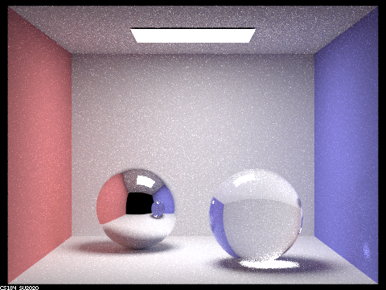

In this project, I first played around with rendering different types of materials (with reflection and refraction). Then, I twiddled with effects from focal depth and aperture size on a thin-lens camera. It was interesting to think about the causes of certain bugs (like the lack of reflection on the right sphere) because I could intuitively reason about what the rays did to produce my results.
In this part, I implemented reflective and refractive ray bouncing behavior and the combination of the two for glassy materials. Here is a sequence of 7 images of CBSpheres.dae, with varying max ray depth. I used 64 samples per pixel and 4 samples per light, so there is a bit of noise.
Max ray depth 0- only the light
Max ray depth 1- wall colors and reflections of the light
Max ray depth 2- reflections of objects other than the light source
Max ray depth 3- refractions from objects other than the light source and ceiling light reflection
Max ray depth 4- light escaping from the sphere and hitting the right wall
Max ray depth 5- similar to 4
Max ray depth 100- similar to 4
Multibounce effects were described above. The steps at which these features appear make sense. When nothing bounces, the camera only sees light straight from the light source. In 1 bounce, the camera can only see thing directly illuminated by the light source. In 2 bounces, the light can go from the light source to an object, then bounce off the reflective spheres, then finally reach the camera, so you can see the object when looking at the sphere; the right sphere needs an extra bounce for the light to escape the inside of the sphere and reach the camera. In 3 bounces, you can see the 1 bounce light from the left sphere's reflection and you can see the internal light for the right sphere. In 4 bounces, you can see how light escaping from the right sphere hits the wall before coming to the camera. After this point, there are not any more complicated bounces, so we get similar results, though less noisy because there are more samples.
A pinhole camera only receives light that travels through an infinitely small "slit." This means all parts of the image look equally in focus. A thin-lens camera model, on the other hand, has each pixel receive light from across the area of the finite-area lens. Since the lens refocuses light from different perspectives, the thin lens result averages over a wider range of angles, which only match up if the object is exactly at the focal depth. This makes objects that are not close to the focal depth more blurry. This effect is lessened if the aperture size is small because we would be averaging over a smaller range of perspectives.
Varying focal depth. The parts of the dragon that are in focus shifts to the right (further back) as the focal depth increases.
Focal depth 4.3
Focal depth 4.6
Focal depth 4.9
Focal depth 5.2
Varying aperture sizes while using focal depth = 4.6. The qualitative difference between closer and further features is lessened as the aperture size decreases.
Aperture size 0.25
Aperture size 0.23
Aperture size 0.20
Aperture size 0.10